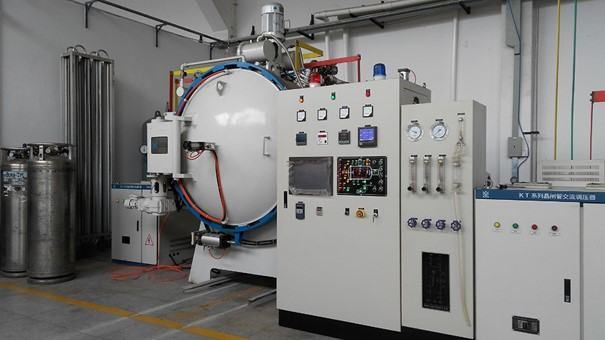
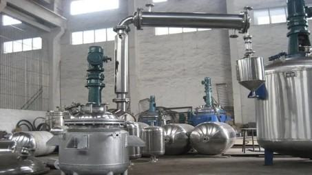
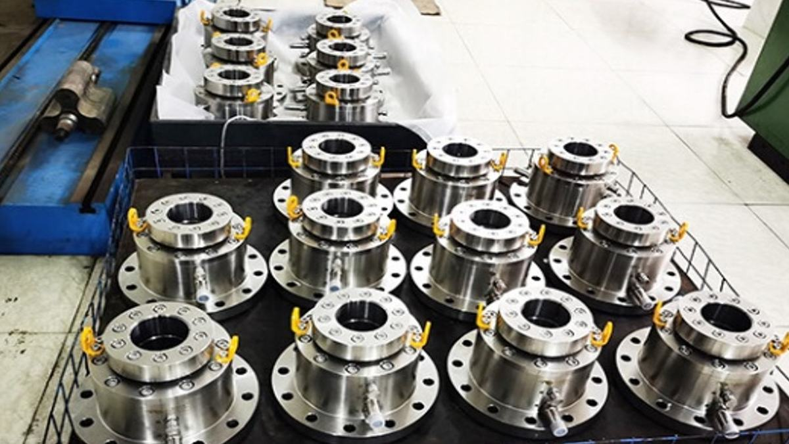

密封问题普遍存在，据统计，世界上每年的密封件用量在10亿件以上；密封至关重要，其性能直接决定了装备的安全性和可靠性，密封一旦失效不仅造成环境污染、能源浪费，还会引起灾难性事故，危及人身安全。磁性液体密封是一种新型的密封方式，能够实现零泄漏、长寿命、高可靠，在石油化工、军工、航空航天等领域发挥了不可替代的作用。在实际应用过程中，如何提高密封的耐压能力、减少密封摩擦力矩是磁性液体密封领域亟待解决的重要难题。
项目组在国家级、省部级等多个项目的支持下，针对如何提高磁性液体密封的耐压能力、降低磁性液体密封的摩擦力矩这一关键难题，经过上万次实验，在国内外首次攻克了高耐压低摩擦新型磁性液体动密封技术，取得了原创性成果。
主要设计创新点包括：
（1）为提高磁性液体密封的耐压能力，提出了阶梯式磁性液体密封新原理，设计了高磁感应强度的钴铁极靴和高磁能积的铷铁硼永磁体，发明了具有强聚磁能力单侧斜角形极齿的新结构。密封的单级耐压能力可达1.12×105Pa，超过国内外公开报道最高值的5倍，泄漏率低于10-12Pa•m3/s（最先进的氦质谱检漏仪不能检出，在密封专业上称其为零泄漏）；
（2）为减少磁性液体密封的摩擦阻力矩，发明了高性能磁性液体的制备新工艺，制备出了性能指标国际领先的全氟聚醚基磁性液体，饱和磁化强度高达603.44Gs，是国内外同类产品的2倍，用于-55℃旋转轴密封时，摩擦力矩至少降低85%；
（3）为避免磁性液体密封装配过程中极齿损坏，发明了高耐压低摩擦磁性液体密封装置中密封组件的装配新方法，设计了易于装配的密封新结构，攻克了在强磁场力作用下，极齿易损坏导致密封耐压能力下降的难题。
项目获得2019年度国家技术发明奖二等奖，2023年度日内瓦国际发明展（IEIG)最高奖等多项国内外奖项，共授权中国发明专利88件，美国及日本发明专利12件，发表SCI论文88篇，EI论文69篇, 近年来在国内外会议作大会报告12次，牵头制定企业标准3项。设计成果广泛应用于反应釜、真空炉、镀膜机、先进雷达等装备，在国内外石油化工、军工、航空航天等领域的上百家单位得到了充分应用，解决了我国军用航空机载设备骨干企业北京青云航空仪表有限公司（232厂）、中国航天器系统集成及空间环境领域的核心单位北京卫星环境工程研究所（511所）等众多单位的高耐压低摩擦零泄漏密封难题，近3年新增销售额1.15亿元，取得了重大社会经济效益。
美国环境保护局（EPA）和美国化学灾害预防联盟（CTPCD）调查显示：美国有近1.2万处设施存放“极危险化学品”，2004年至2023年2月间，上述设施发生了超过2820起泄漏事故，在全美范围内平均每两天就会发生一起。泄漏的介质往往会迅速地在空气或水中大面积扩散、蔓延，不仅造成环境污染、能源浪费，严重的还会引起重大安全事故，危及人身安全。而磁性液体密封是一种新型的密封方式，能够实现零泄漏、长寿命、高可靠，但是依旧存在不耐高压、低温下摩擦力矩大等问题。如何提高磁性液体密封的耐压能力，减少密封阻力矩成为了磁性液体密封领域亟待解决的重要问题。
磁性液体密封利用了磁性液体对磁场的响应特性，将磁性液体注入由高性能的永磁体、导磁良好的轴和极靴所构成的导磁回路中，形成数个液体“O”型圈，发挥密封作用，其原理如图1。磁性液体是一种新型的纳米功能材料，是将经过表面活性剂包覆的纳米级磁性颗粒均匀分散于基载液中，形成的一种稳定性胶体溶液，其组成如图2。磁性液体超低的饱和蒸汽压使密封在一般情况下甚至高真空条件下也不会产生污染系统或环境的粒子；同时，因为磁性液体密封的极靴与轴之间没有接触，没有旋转组件和固定组件之间的摩擦，不存在机械磨损；且磁性液体密封泄漏率低于10-12Pa•m3/s（最先进的氦质谱检漏仪不能检出，称其为零泄漏），保证了密封过程中的完全无污染；因此，磁性液体密封具有其他密封方式所不具备的技术优势，在环境保护方面尤其显著。
然而，磁性液体动密封一直缺少系统性的设计方法，项目组的李德才教授及其团队经过了上万次实验，提出了具有系统性、全面性的新型磁性液体密封设计方法：（1）提出了阶梯式磁性液体密封新原理，设计了高磁感应强度的钴铁极靴和高磁能积的铷铁硼永磁体，发明了具有强聚磁能力单侧斜角形极齿的新结构。（2）制备出了性能指标国际领先的全氟聚醚基磁性液体，系统地研究了磁性液体的流变特性，研究表明该全氟聚醚基磁性液体能够有效降低摩擦阻力矩。（3）发明了高耐压低摩擦磁性液体密封装置中密封组件的装配新方法，攻克了在强磁场力作用下，极齿易损坏导致密封耐压能力下降的难题。
获得授权发明专利88件，美国及日本专利12件，近年来在国内外会议作大会报告12次，牵头制定企业标准3项。使我国磁性液体密封技术的性能指标做到了国际领先。设计成果广泛应用于真空炉、反应釜、镀膜机、先进雷达等装备，在国内外石油化工、军工、航空航天等领域的数百家单位得到了充分应用，近三年新增销售额1.15亿元，取得了重大社会经济效益。主要设计创新点如下：
设计创新点1：设计了阶梯式磁性液体密封新结构。
磁性液体密封的耐压能力直接影响密封的可靠性。在某些应用场合，尤其是化工、军工等领域中要求磁性液体密封耐压能力大、可靠性高。因此项目组围绕如何提高耐压能力，从以下几个方面进行了设计：
（1）密封结构的总体设计新原理：项目首次提出了高耐压低摩擦阶梯式磁性液体零泄漏动密封新原理，如图3，该新原理密封的设计方法如公式（1）。创新性在于将旋转轴和极靴设计为阶梯式，在极靴内环表面和端面上均开设极齿，并注入磁性液体。在普通磁性液体密封轴向耐压的基础上，额外增加了径向耐压能力。这种径向密封相比轴向密封距离磁源更近，形成的磁场梯度差更大，密封的耐压能力也更强。与此同时，采用阶梯式密封结构也使得泄漏通道变得更长，增强了密封的耐压能力和可靠性。
（2）永磁材料设计：永磁体作为磁性液体密封结构的磁源，其性能的好坏对密封的耐压能力有着至关重要的影响。最大磁能积（BH）max表示单位体积内所具有的磁能积的最大值，作为磁体内存储的最大磁能量，成为衡量永磁体性能的重要参数。
项目组分析了不同永磁材料的磁学特性，得出钕铁硼相较于其他永磁材料在最大磁能积（BH）max等方面有明显的优势，故选钕铁硼材料作为永磁体，最大化的提高密封间隙处的磁场强度进而提高磁性液体密封的耐压能力。针对永磁体的结构设计，项目组研究了不同厚度永磁体结构的磁通密度差值变化，如图4，提出了一种永磁体尺寸设计方法，如公式（2）。
（3）极靴材料设计：项目组研究了不同材料的磁学特性和加工工艺，分析了不同极靴材料的导磁特性，如图5，最终设计以钴铁作为材料的极靴。
（4）极齿齿形结构优化：根据耐压能力正比于磁性液体两界面磁场强度差值大小的原理，极齿的结构设计工作主要集中在确定合理齿形方面。由于矩形极齿加工工艺简单，传统磁性液体密封多采用矩形极齿。
项目组研究了不同极齿齿形下的磁场分布，如图6。结果显示，单侧斜角形齿的磁场强度明显高于其他几种齿形。密封的单级耐压能力可达1.12×105Pa，超过国内外公开报道最高值的5倍，泄漏率低于10-12Pa•m3/s。
设计创新点2：发明了高性能的全氟聚醚基磁性液体。
磁性液体中纳米颗粒的直径大小，基载液的种类直接决定了磁性液体的流变特性和用于密封时摩擦力矩的大小，这就迫切需要研究流变学特性良好的磁性液体。当稳定性良好的全氟聚醚作为基载液时，磁性液体的性能将显著提升，但存在着工艺复杂、难以制备等问题。
（1）高性能磁性液体制备：项目组进行了大量的研究试验，针对氟醚化合物因分子结构复杂，链段结构变化多样导致的无法与表面活性剂稳定互溶的难题，揭示了氟碳表面活性剂的溶解性能、表面张力及粘度随温度的变化规律，确定了氟碳化合物基磁性液体的制备工艺条件，创造性地提出了同源衍生磁性液体制备新思路，发明了全氟聚醚基磁性液体的制备工艺，如图7。潜心研制的全氟聚醚基磁性液体具备良好的磁学性能，饱和磁化强度高达586Gs，是国内外同类产品的2倍，如图8，能够确保密封具有较高的耐压能力。
（2）磁性液体流变学特性研究：项目组对磁性液体的流变特性进行了系统深入地研究，发明了一种磁性液体粘性计算方法，公式（3）；建立了磁性液体动密封起动力矩公式（4）。研究表明，该全氟聚醚基磁性液体具备优异的稳定性，能够在长时间静置后不因磁性颗粒大量成链而使密封起动力矩增大；在低温环境下粘度也不会显著增大，尤其适合在低温下长期稳定工作，用于旋转轴密封时，摩擦力矩至少降低85%，降低了功率损耗，减少了能源消耗，具有显著的环境和社会效益。
设计创新点3：发明了针对高耐压低摩擦磁性液体密封装置中密封组件的装配新方法。
由于磁性液体密封的磁源通常为磁性较强的永磁体，在实际安装中密封装置受到的磁场力强。并且磁性液体密封的密封间隙小，极齿薄，这样使得在装配过程中，极齿极易损坏，导致密封的耐压能力下降甚至失效。
本项目发明了针对高耐压低摩擦磁性液体密封装置中密封组件的装配新方法：
（1）装配方法一，如图9，设计了磁性液体密封组件充磁结构，在对永磁体进行充磁前完成对于密封组件胶粘磨削以及清洗等的工作，创造性地将不同材料的磁学性能差异应用到磁性液体密封组件装配过程中，提高了装配效率，克服磁性液体密封装置装配时在强磁性作用下极易发生碰撞的难题，改善了密封组件和所密封设备的工作性能。
（2）装配方法二，如图10，创新性在于非磁性导向环与轴的间隙等于极靴的极齿与轴的间隙，与轴装配时，转轴从靠近左轴承的一端装入，先与导向环接触从而起到保护极齿，保证密封效果的作用；
（3）装配方法三，如图11，创新性在于转轴具有0.1~0.2mm的凸台以便转轴除凸台外的其他周面与轴套的内周面间形成间隙，为转轴在装配过程中形成位移余量，有效避免了安装时极靴因磁力过大剐蹭转轴从而造成的极齿损坏现象，保护了密封装置及其他零件。
发明的高耐压低摩擦新型磁性液体密封与目前国内外先进磁性液体密封的设计及性能对比：
设计/性能指标本发明技术Ferrotec公司产品比较结果密封结构阶梯式结构非阶梯式结构可靠性增加极齿齿形单侧斜角形极齿矩形极齿耐压能力增加永磁体材料磁能积至少为45MGOe铷铁硼磁能积最多为40MGOe铷铁硼克服了高磁能积铷铁硼装配易碎的难题磁性液体饱和磁化强度603.44Gs251Gs至少提高2倍单级耐压值最高达1.12×105Pa最高达0.20×105Pa至少提高5倍摩擦力矩用于直径172mm的旋转轴密封时，在-55℃保温2小时后启动力矩仅0.9Kg•m用于直径160mm的旋转轴密封时，在-55℃保温2小时后启动力矩达7Kg•m至少降低85%注：Ferrotec是国际知名的磁性液体密封公司，国外公司产品性能参数参照其产品样本，本发明技术性能指标参照相关检测报告和应用证明。
由上述设计和性能对比表可以看出，高耐压低摩擦新型磁性液体密封较传统磁性液体密封耐压能力显著提高，摩擦力矩显著降低。



磁性液体动密封,零泄漏长寿命高可靠
密封技术
密封失效防灾害,直接关系设备与人身安全
年用量 10 亿件的密封市场,高端替代空间大
基础件攻关的行业样本